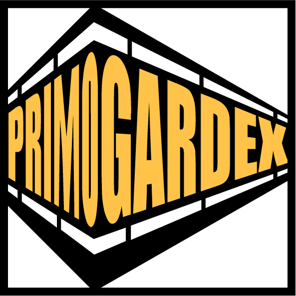

Tocima
Résidentiel

PrimoGardex'"> Cercle PartenaireUne collaboration se construit dans le temps.
Des kits garde-corps sur mesure, prêts à poser, et des conditions dédiées aux professionnels qui travaillent régulièrement avec Primo Gardex.

Garde-corps de balcon
Remplissage tôle perforée
 Fixation platines
Fixation platines